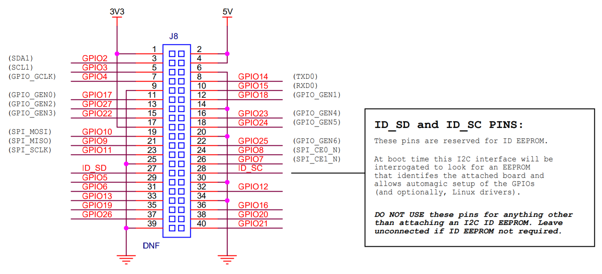

README
个人认为，树莓派应该算是目前开源硬件里学习嵌入式Linux系统最好的工具，里面的设计思路和一些工具是很值得借鉴的，这里主要使用Raspberry Pi 4B进行系统架构分析。
40 Pin引脚

docs
NO. |
文件名称 |
摘要 |
|---|---|---|
0028 |
为什么可以通过raspberrypi.local访问树莓派 |
|
0027 |
KiCad制作风扇扩展板FanHAT |
|
0026 |
搭建git服务器 |
|
0025 |
PWM控制风扇 |
|
0024 |
C语言获取图片可以更好理解V4L2接口 |
|
0023 |
记录是最好的反思 |
|
0022 |
理解SD卡自动扩容工作原理 |
|
0021 |
通过wav文件了解PCM数据 |
|
0020 |
在树莓派中理解Android Binder通信 |
|
0019 |
USB OTG虚拟串口，可用于学习串口通信 |
|
0018 |
利用Overlay加载AT24C02 I2C驱动，通过i2c-tools获取数据 |
|
0017 |
通过Python3 Flask/websocket作为服务端，使用GPIO控制网页背景 |
|
0016 |
通过Python3 Flask作为HTTP服务端，控制GPIO |
|
0015 |
通过使用内核GPIO Sysfs Interface在用户空间控制LED |
|
0014 |
通过使用动态改变设备树，使用内核gpio-poweroff驱动实现LED控制 |
|
0013 |
Python3自动发邮件 |
|
0012 |
分析dtparam/dtoverlay本质，为什么能够动态改变设备与驱动的match |
|
0011 |
怎么分析芯片设备树 |
|
0010 |
在Linux命令行如何阅读代码？ |
|
0009 |
使用USB Camera搭建IP Camera，理解IP Camera工作原理 |
|
0008 |
使用USB Camera分析udev加载驱动原理，理解udev工作原理 |
|
0007 |
分析Linux系统进程何启动起来 |
|
0006 |
像访问普通文件夹一样访问树莓派文件系统 |
|
0005 |
编译Linux内核，以备后续修改及分析驱动 |
|
0004 |
看内核启动log信息，当机器无法启动可以判定问题 |
|
0003 |
时间很宝贵，只介绍apt、pip镜像站，其他可自行扩展 |
|
0002 |
在有些场合，没有Wifi想登陆树莓派，使用USB虚拟网卡SSH登陆 |
|
0001 |
一个屏比一个树莓派还贵，不大可能为了玩个树莓派还单独买个屏，并不是每个人都有屏的需求 |